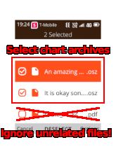
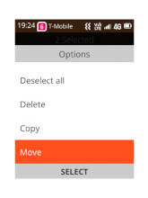
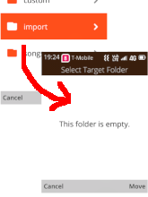
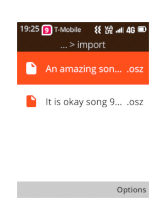
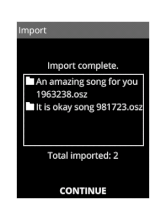

this is a guide that will teach you how and where to get more charts/songs!
although it is admittedly tedious to import the songs into this game, it's pretty simple once you learn how to do it.
the first step is to, of course, find some songs that you like!
just download them to your device for now. the next step will tell you what to do with them.
below are some websites that you can use to download some songs. the list is grouped by filetype.
reminder, tja files are scattered throughout the internet. use your favorite search engine if you intend to find tja charts.
once you're done downloading songs, proceed to the next step.
once you've downloaded some charts, you must then move them into the import folder.
first: with your file manager, select the files that you've downloaded.

next: move the files...

...into the import folder.
it is located at /others/.kpdtaiko/import/

you have moved the files.

proceed to the next step.
at this point, it is very simple.
open the game, and select Import on the title screen.
Follow the on screen instructions.
Once it finishes, it will show you a summary of what was imported.

If it all looks good, hit "continue", then hit "back". It will then ask you if you want to rescan the song library. select yes.
Once that's done, ensure that the songs were imported correctly.
once you know the songs were imported correctly, then you can clear the import folder. (the import folder keeps the archives you downloaded in case something goes wrong)
then, you're done!! enjoy playing!!!